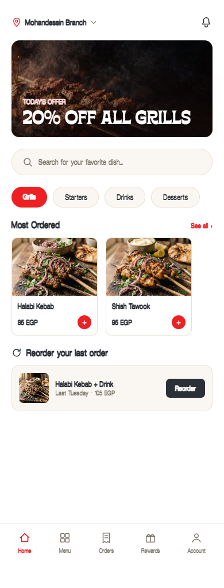

Mobile app
The complete English customer design canvas, including ordering, reservation, loyalty and support screens.
Open customer app →Explore the customer app, operations dashboard, marketing website, user journeys and brand assets for Bayt Elkaram. This is a design and planning handover; production software has not been built in this package.

Bayt Elkaram brings Syrian and Egyptian cuisine to a planned multi-branch experience in Greater Cairo. The work covers discovery, ordering, reservation, tracking, loyalty and restaurant operations, with a website for discovery and conversion.
The exported HTML files are editable design canvases. The Google-style maps are illustrative previews. Flutter, Next.js and NestJS applications, live integrations, stores and production testing are future work.
Open in a browser. These self-contained HTML canvases preserve the source design.
The complete English customer design canvas, including ordering, reservation, loyalty and support screens.
Open customer app →Operations, menu management, branches, staff, reporting and marketing screen designs.
Open dashboard →Six desktop page artboards: Home, Locations, Catering & Events, What's On, About Us and Contact.
Open website →Typography, palette, controls, decorative language and shared components.
Open design system →Visual maps of the application structure and the documented customer and operations journeys.
Open sitemap →Open flows →Five sample RTL artboards saved in the Arabic canvas. This does not represent a complete Arabic localization.
Open Arabic examples →Fifty export-ready PNGs. Select any image to view its full size.
A curated English guide to the full work, with the original detailed notes retained separately.
Food, branch, campaign and social-wall images, grouped by SKU prefix.
Open image folder →Logo PNGs, Illustrator source, Borensa and Offset TM font assets.
Open logo folder →Historical detailed planning notes and original design token files retained for reference.
Open source notes →